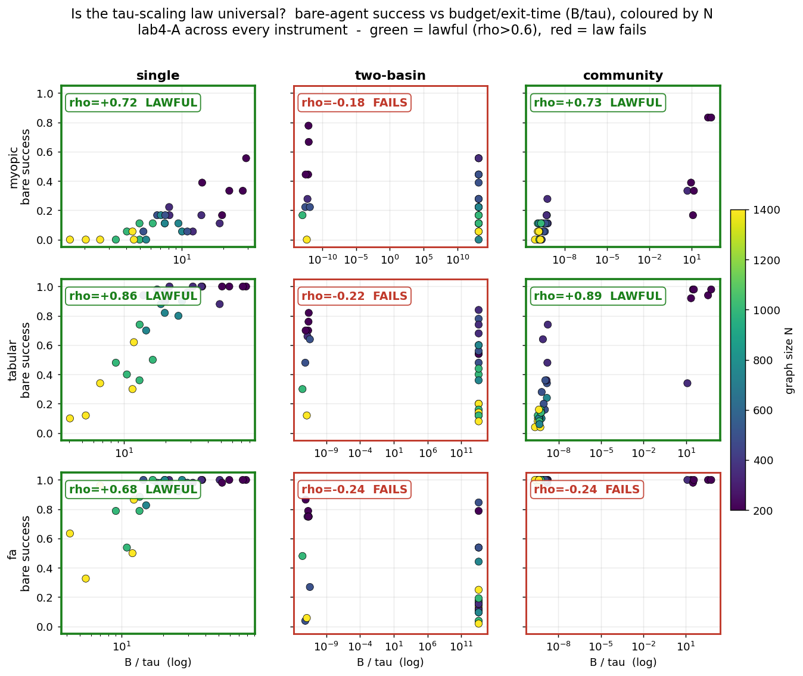

WORKGROUND · ATLAS
Atlas — Is the scaling law universal?
lab4's headline result A says
the bare learner's collapse is lawful: failure is predicted by a
scalar — the reference exit time τ — computed independently of the
learner, so bare success rises monotonically in the dimensionless ratio
B/τ (ρ=+0.78 under the engine). lab4 measured this in
one world with one agent. This atlas slice re-runs the
exact same test across every instrument: 3 agents (myopic, tabular,
function-approximation) × 3 worlds (single-basin, two-basin, community),
N = 200 → 1400, 5 seeds, on the same Rust engine. The question: is
lab4-A a universal law or an instrument-specific artefact?
The ρ table — across every instrument
| agent (instrument) | single-basin | two-basin | community |
|---|---|---|---|
| myopic | +0.72 ✓ | −0.18 ✗ | +0.73 ✓ |
| tabular | +0.86 ✓ | −0.22 ✗ | +0.89 ✓ |
| fa (lossy map) | +0.68 ✓ | −0.24 ✗ | −0.24 ✗ |
Lawful (ρ>0.6) in 5 of 9 cells: myopic/single, myopic/community, tabular/single, tabular/community, fa/single. The law fails in the other 4 — and the failures are not random noise.

Honest verdict
lab4-A is not a universal law — it is conditional on the world's basin geometry, not on the agent.
- Holds for all three agents in the single-basin world (ρ = +0.72 / +0.86 / +0.68). lab4's headline reproduces exactly where lab4 measured it; the choice of instrument (myopic, tabular, lossy FA) does not break it. This is the genuine, robust core of the claim.
- Holds for the table-class agents in the community (emergent-basin) world too (myopic +0.73, tabular +0.89) — the law travels to a basin that was never planted, a real strengthening. But it breaks for the lossy-map agent there (fa, ρ = −0.24): under function approximation the τ scalar no longer predicts the collapse in an emergent basin.
- Fails for every agent in the two-basin world (ρ = −0.18 / −0.22 / −0.24, all negative). With two competing basins of different depth, a single scalar exit time computed from the start state mispredicts the bare learner's fate systematically and in the same direction for all three instruments. This is the key negative result: the τ-scaling law is geometry-specific, not a law of sample-limited learning per se.
So lab4's headline is instrument-robust but not world-universal. The collapse-predicted-by-τ phenomenon is a property of single-attractor exit problems: where one reference exit time meaningfully summarises the escape, it predicts bare success across myopic, tabular, and lossy-FA learners alike. Where the escape is governed by competing attractors (two-basin) or by an emergent community basin seen through a lossy map (fa/community), the scalar loses its predictive grip. lab4 was right within its frame and honest to call it a law there; this atlas shows the frame's edges. A universal law would have to be stated over the basin spectrum, not a single MFPT — which is exactly the open direction lab4's own falsification anticipated.
Backbone: lab5kit / labcore (Rust engine), read-only.
N ∈ {200, 350, 500, 750, 1000, 1400}, 5 seeds per cell. Data:
atlas/scaling.json. ρ = Spearman of (B/τ, bare success).